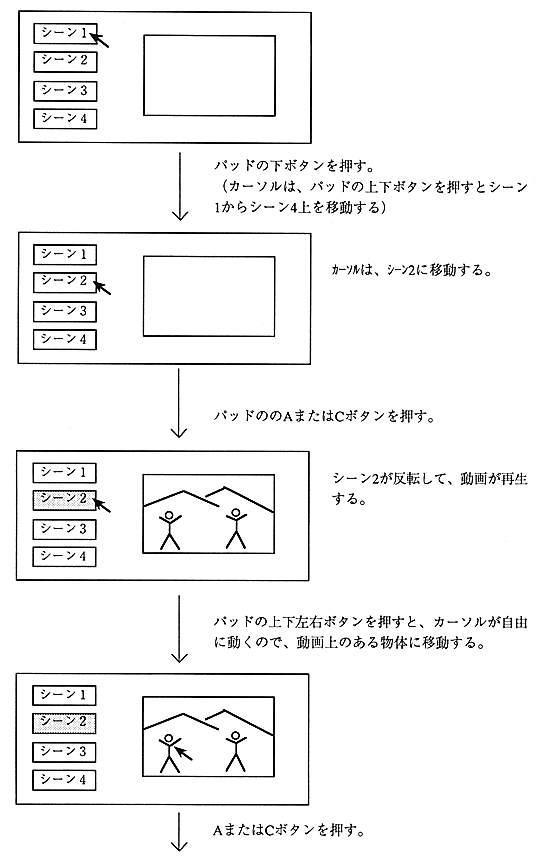

Return to previous page
｜
Return to menu
｜
Go to next page
App image
Author player application images are shown in Figure 4.3 and Figure 4.4.
The opening screen is displayed. The cursor points to scene 1.

Figure 4.3 Operation image (1)
Return to previous page
｜
Return to menu
｜
Go to next page